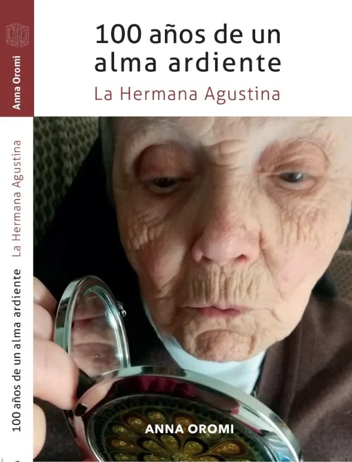

Autora
Biografía de una monja centenaria
Relatos y análisis de la vida de una monja sabia y longeva, dotada de una mente extraordinariamente amorosa. Una exploración biográfica con perspectiva terapéutica, que recoge la memoria de una mujer que habitó 103 años con plena conciencia. La historia que está en el origen de todo: este libro es también la semilla del oráculo Luz o Cruz.